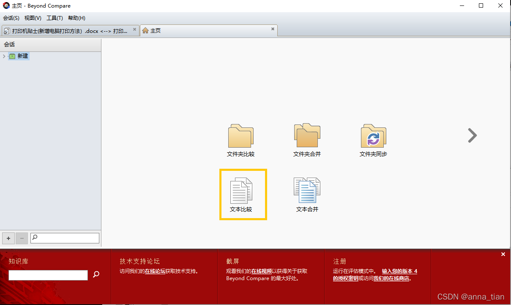
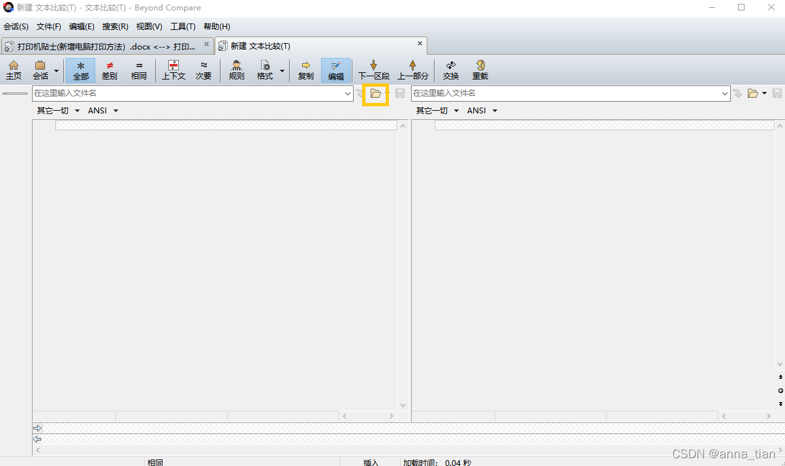
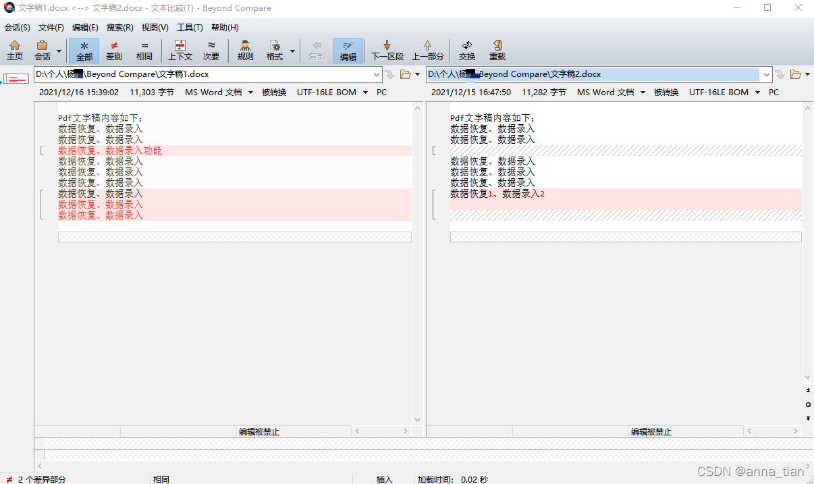

word文档是我们最常用的文件类型之一，我们日常处理文件经常需要对比文件的不同。遇到这种情况，大家可能会想了解“word怎样对比两篇文档的不同，word文件对比工具有哪些”。
一、word文件对比工具有哪些
首先要明确的是，对比两篇word文档，最快捷的方式是选择一款好用的工具。工具自动进行比较、展示结果，省时省力。
接下来我们看下，word文档对比工具有哪些。
市面上适用于word文档的文件对比工具包括两类，一类是word自带的工具，第二类是第三方文件对比工具，以下分别介绍两类各自的优缺点：
Word自带功能：
- 1
优点：不用新安装软件
缺点：操作繁琐，差异内容无法一目了然
第三方工具：
- 1
优点：功能全面；支持文件类型多；处理速度快；差异显示友好；支持多种规则比对
缺点：需要重新安装软件
Word自带功能方便，但易用性差，第三方工具易用性好、功能全面，在条件允许的情况下还是建议首选第三方工具。第三方工具中，最常用的包括Beyond Compare、WinMerge等。其中，Beyond Compare应用广泛，结果展示直观，对word文档的对比支持的也不错。
二、word怎样对比两篇文档的不同
下面就以具Beyond Compare为例，说明word怎样对比两篇文档的不同。
1、创建“文本比较”会话：打开软件对比工具Beyond Compare，在“新建会话”内，选择“文本比较”，如图2所示。

图1：Beyond Compare主页
2、加载文档：进入“新建文本比对”页面后，选择文件夹图标，添加文件，或者直接将文件图标拖拽至空白区。

图2：添加文件
比对结果展示：打开两个word文档后，软件会自动将文件类型识别为word文档，两个文档不同的行会以红色底标注，不同的文字会变成红色，如下图所示。
- 1

图3：文件比对结果
文件比对结果
以上三步即可完成word文档的比对，过程还是比较简单、便捷的。
Beyond Compare的其它比对功能，操作过程大致相同。更多教程可访问Beyond Compare中文网站进行学习。
以上就是笔者介绍的“word怎样对比两篇文档的不同，word文件对比工具有哪些”，希望可以帮到各位读者。


 写评论
写评论 2897
2897


 回复
回复


 被折叠的 0 条评论
为什么被折叠?
被折叠的 0 条评论
为什么被折叠?
 到【灌水乐园】发言
到【灌水乐园】发言